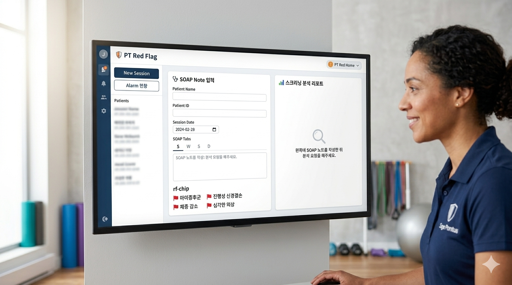

Identify signs that may require urgent physician evaluation before routine PT continues.
PT/PTA clinical escalation and defensible documentation
Turn red, yellow, and green flag screening into referral-ready documentation.
FlagChart helps physical therapy teams classify concerning symptoms, document clinical reasoning, and generate physician referral, insurance, and legal audit trail packets from the same visit workflow.

RED
Immediate referral
YELLOW
Physician checkup
GREEN
Continue PT
Generated packet
Referral letter · Insurance rationale · Legal audit trail
Clinical workflow
Built around the way PTs screen and document risk
Support provider checkup recommendations, follow-up plans, and patient education records.
Preserve rationale for continuing skilled PT when escalation triggers are not present.
Outputs
One screen, three defensible documents
Physician referral summary
Payer medical necessity rationale
Legal audit trail and communication log